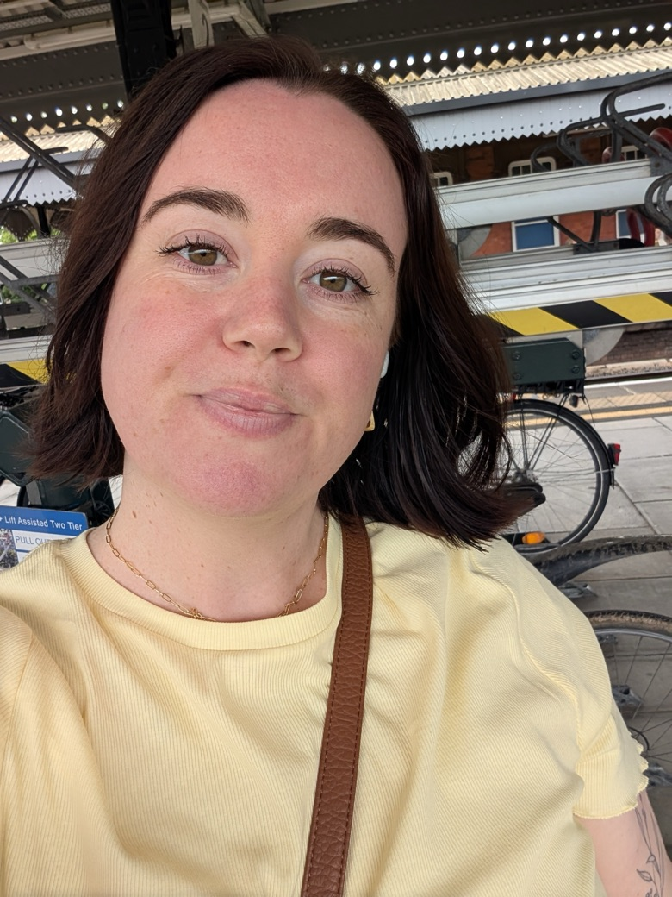

Thanks for visiting. Here you can find out more about me, what it's like to work with me, and what I'm passionate about.
I'm the Director of Communication & Connection at Think Productive. But what does that actually mean? It means I spend most of my days spinning lots of plates, working on different projects and working across our global teams. I lead all of our marketing efforts, work alongside our brilliant MD to keep the ship sailing, and make sure our global licensees have everything they need to succeed.
Fairness matters more to me than almost anything else. How decisions get made, how people are treated, how kudos gets shared.
Directness is important to me. I don't beat around the bush, and I'd rather have an uncomfortable conversation than a superficial one.
Efficiency is my superpower. I like things running smoothly, without any clunkiness.
I like getting shit done. You'll always know where you stand with me, and how I feel about a decision or direction. I'm not stubborn; I know when to die on a hill and when to step aside, but I like to make sure everyone's been heard and considered.
I really care about people feeling appreciated. Appreciation goes a long way, and when people feel appreciated, they care more about the work they do.
I'm a new mum (can you still say that with a toddler?!), so I really care about motherhood, mums being supported in the workplace (and outside of it), work-life balance and self-care. I volunteer with local charity Frome Birth Talk, who do excellent work supporting new parents with free and low-cost counselling, which I have used myself.
Kudos to Jess for being an absolute linchpin at HQ. Jess has
navigated new session logistics and endless webinars, she has calmly managed a myriad of requests and
changing circumstances from the team, bookkeepers, clients and suppliers. Honestly, it would take me all
day to work out and list all the things she's been juggling and taking off my hands. And still she finds
space to think and plan strategically about things like SEO and the website.
I appreciate your calmness, your "I'll fix it" attitude. I appreciate that you have sorted the
logistics into such an efficient process. I know I don't need to chase you for handouts, that you'll get
the job done and let me know if there is a problem. I appreciate all those extra things you do, checking
in with us and sharing our successes via client feedback. You do your job in a way that makes it look
like everything is effortless which I'm sure it's not. You are much valued and appreciated.
Jess encouraged me on a daily basis and ensured I was totally comfortable with the campaign I was on,
even offering to participate in practice calls on multiple occasions if I felt I needed it. By the time
I left Qualifa I was able to hit targets regularly and felt like a key member of the team, I can only
accredit Jess for this! I now feel completely comfortable during phone calls and tele-conferences. My
confidence increased substantially while being managed by Jess. I still practice the techniques she
taught me!
In my downtime, I love hanging out with my daughter. We'll usually be at the farm or soft play, and we'll definitely find time for a babyccino or two. I also love spending time with my friends and family, eating, drinking, seeing shows and having fun!